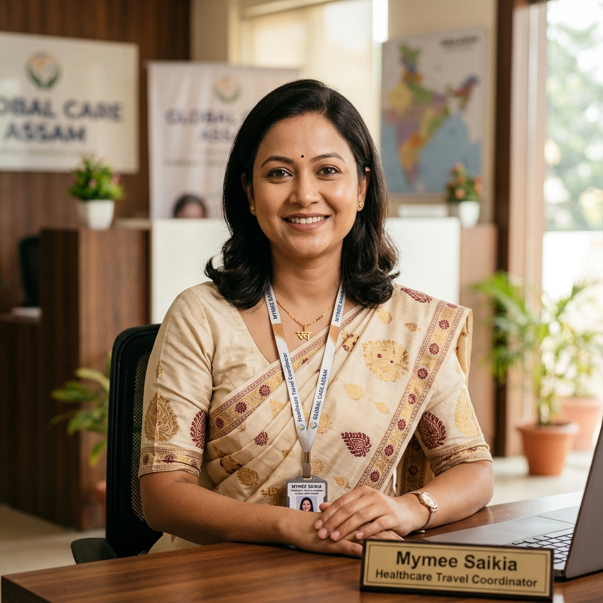

Travel planning & tickets
Help coordinating train/air travel options, ticket reservations with patient-suitable timings, and journey details from Assam.
Personal, on-the-ground assistance for patients and families travelling outside Assam for medical care — from planning journeys and booking hospital-side stays to coordinating appointments, discharge, and the trip home.

Assamese • Hindi • Bengali • English
Direct communication for patient and family
Delhi, Chennai, Vellore, Bangalore, Mumbai, Hyderabad, Kolkata
I’m Mymee Saikia, based in Morigaon, Assam. When a medical emergency or serious illness strikes, travelling to giant, unfamiliar hospitals in distant cities is terrifying for patients and exhausting for their families.
You shouldn’t have to deal with complex flight/train bookings, finding hygienic accommodation near the hospital, navigating confusing OPD corridors, and language barriers completely on your own. I serve as your dedicated companion and local coordinator — organizing the entire journey around your medical needs with warmth, empathy, and diligence.
Coordinating suitable train/air tickets, wheelchair assistance, station pickups, and clean stays tailored to patient recovery.
Guiding you through appointment desks, diagnostic test counters, admission formalities, and billing inquiries.
Frequent updates via calls and WhatsApp for sons, daughters, and relatives living in other cities or abroad.
Important Clarity: I provide non-medical travel, logistics, and patient coordination services. Medical diagnosis, treatment plans, and clinical choices remain strictly between you and your qualified doctors.
Going to another city for treatment can feel overwhelming. I help organise the practical details, so patients and families have someone they can rely on along the way.
Help coordinating train/air travel options, ticket reservations with patient-suitable timings, and journey details from Assam.
Assistance finding and arranging clean, comfortable accommodation close to the hospital, tailored to your budget and recovery needs.
Help scheduling specialist appointments, confirming dates, and organizing medical reports beforehand.
Practical guidance with city navigation, transport to the hospital, registration desks, and managing long hospital queues.
Coordination of discharge paperwork, medication collection, follow-up instructions, and the safe return journey home.
Need wheelchair assistance, special diet accommodation, or specific accompaniment? Every journey is adapted to your family's situation.
Every patient’s case is unique. We start by listening to your specific situation and then agree on the exact support required.
Share your target city, hospital or doctor, travel dates, and patient requirements over a phone call or WhatsApp.
We review travel options, accommodation, appointment scheduling, and provide an upfront quote before booking anything.
You have a direct, responsive contact on the ground guiding you through arrivals, hospital visits, and test routines.
We help finalize hospital formalities, medicine collection, reports, and coordinate your safe journey back home to Assam.
Start with a transparent consultation. If you decide to proceed, we’ll tailor the support to your exact journey and provide a clear quote before work begins.
A comprehensive session to discuss the patient's condition, destination options, timeline, and practical next steps.
Help coordinating select arrangements such as travel routes, hospital-side accommodation, and appointment bookings.
Full support from departure in Assam through hospital visits, test schedules, discharge coordination, and return travel.
*Note: Travel tickets, hotel bills, hospital invoices, and third-party expenses are separate and paid directly at actuals unless explicitly agreed in writing.
If you live in another Indian city or abroad (USA, UK, Singapore, Gulf) and are trying to arrange medical treatment for an elderly parent or relative from Assam, Mymee serves as your trusted on-the-ground anchor.
We establish a clear communication plan, define authorized family contacts, and provide daily voice/photo updates so you have complete peace of mind while your parents receive proper care.
Discuss Family Support ↗Detailed updates on doctor feedback, hospital queues, and accommodation comfort.
Gentle pacing, wheelchair assistance, and careful hotel selection with elevator access.
No hidden markups. All third-party expenses backed by official receipts.
Here is how typical patient journeys are organized, ensuring complete care without making unrealistic medical claims.
The Challenge: Elderly patient unable to navigate long airport walks and heavy hospital queues.
Support Provided: Train ticket with lower berth, wheelchair assistance at station, homestay 500m from hospital, and daily accompaniment to consultations.
The Challenge: Family nervous about language barriers and large city hospital registrations.
Support Provided: Pre-booked OPD appointment, verified airport cab pickup, registration paperwork handling, and translation assistance.
The Challenge: Daughter working in Singapore needing reliable updates on mother’s cardiac evaluation.
Support Provided: Daily voice notes and photo updates on test status, doctor's discharge advice communicated directly, and safe journey back to Guwahati.
Every family’s situation is different. A dedicated consultation helps us understand your medical travel needs and discuss practical next steps before committing to bookings.
The fee depends on discussion depth and journey complexity. The exact amount is always confirmed with you before scheduling.
If your family decides to proceed with Mymee’s coordination service, the consultation fee already paid (₹1,000–₹2,000) is deducted 100% from your final service charge.
Covers dedicated planning, accompaniment, phone support, and administrative coordination.
Train/flight tickets, hotel stays, hospital bills, medicines, and local cabs are paid directly or at actual receipt values.
All costs are discussed and confirmed in advance in writing before bookings are made.
Need urgent travel assistance? Contact Mymee directly via phone or WhatsApp to verify immediate slot availability.
📞 +91 96782 26441Clear answers to frequent questions about medical travel coordination.
I support travel to major healthcare hubs across India including Delhi NCR, Chennai, CMC Vellore, Bangalore, Mumbai, Hyderabad, and Kolkata. Specific hospital support is agreed upon based on your requirement.
Yes. If family members are unable to take leave or travel, I can provide end-to-end accompaniment or on-ground hospital assistance. In-person availability must be confirmed in advance.
The ₹1,000–₹2,000 consultation covers a detailed evaluation of your journey, review of logistics, hospital/doctor booking guidance, and an upfront service quote. It is 100% adjusted against your service fee if you proceed.
The service fee covers dedicated planning, appointment scheduling, local coordination, and patient support. Travel tickets, accommodation, and hospital expenses are separate and paid at actuals.
Yes. We regularly coordinate with adult children and family living in other Indian cities or abroad, offering WhatsApp updates, call syncs, and clear report sharing.
No. I provide non-medical travel, logistics, and navigation assistance. All clinical evaluations, treatment decisions, and medical advice remain strictly with your healthcare specialists.
Every case starts with a conversation. Message or call directly to discuss your medical travel requirements.
*Please avoid sending sensitive medical documents or unverified reports in your initial message. We will review details securely during the consultation.
Fill this in to open WhatsApp with your details already formatted: